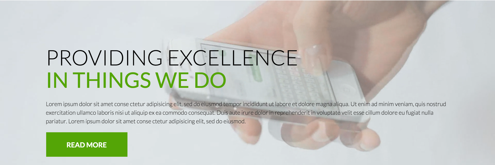

Drop-down Navigation
What I hope to practice/learn:
Drop-down navigation headings can be really annoying to deal with. I can usually get everything to work, but once I start add CSS everything starts to mess up. I want to practice and learn how to efficiently code my nav bars so that I am able to efficiently play with the style and not mess up its functionality.
How this relates to what I have/will learn in WDD?
In our previous class, we learned how to use Jquery to make drop down navs in our websites. In WDD nav bars are very important because they are the way people get around your website. This component is used is almost every website and is a key component to know how to build.
How might I build this:
- 1
- 2Navigation
<nav>containing a<ul>with five<li>, each containing an<a> - 3Company branding established with
<h1>and a<p>element with styling. - 4Drop-down menu items will be nested
<ul>inside of corresponding<li>
Slider
What I hope to practice/learn:
I have always wanted to make video sliders but every time I have tried I have failed or get frustrated and quit. I want to learn how to make video slider like this one, where animated text is also incorporated.
How this relates to what I have/will learn in WDD?
WWD is all about being up to date with the latest trends and technology. To me, video sliders are a great way to make a page look unique. This is a stepping stone to other features that I want to make, by learning this, not only will I learn to make a video slider, but other components that are similar.
How might I build this:
- 1Create the component as a
<section> - 2Add a
<div>for each video and each<h1-h3>or<p> - 3Buttons are
<ul>with five<img>with<a>
Responsive Features List

What I hope to practice/learn:
Featured lists are common in the WWD world. With this component I hope to learn how to make more complex featured lists that are responsive.
How this relates to what I have/will learn in WDD?
I have done this before with boot strap, but I want to learn how to do it from scratch. This component will help polish my semantic skills as well as simple and advanced CSS knowledge.
How might I build this:
- 1Create
<section>with<ol> - 2Add five
<li>each with an<article> - 3
<article>contains two<figure> - 4One
<figure>contains background<img> - 5Second
<figure>contains<img>and<ul>with two<li>
Featured Component
Video CTA
What I hope to practice/learn:
I hope to practice my basic css and javascript skills with this component. I will learn how to save space by allowing content to cycle through with interactivity.
How this relates to what I have/will learn in WDD?
I have worked with each different element before; now it is time to put them together. In WWD we want to find unique ways to make content user friendly, unique, and efficient. This is a great way to change spacious bland content into something unique.
How might I build this:
- 1Create component in a
<section> - 2Section title using
<h1>or<h2> - 3For each testimonial add an
<article> - 4Quote
<blockquote>containing a<p> - 5Details establishing both name
<h3>and location<p> - 6Pagination created via
<ul>containing three<li> - 7Each pagination
<li>showcases the author<img>
Tab Accordion
What I hope to practice/learn:
I worked with Jquery to make accordions, but what I made was very basic and I did not understand. As another point, I wanted to make it tabbed, and never figured it out. With this component I hope to learn how to make a tabbed accordion and style it effectively.
How this relates to what I have/will learn in WDD?
Almost every website incorporates accordions now a day. As I said, I have worked with them before through Jquery but doing this from scratch and making it a tabbed accordion will get me to understand how to manipulate this component.
How might I build this:
- 1Create
<section>with four<label> - 2Add four
<la>and four<article> - 3
<la>will hold tab and<article>the content